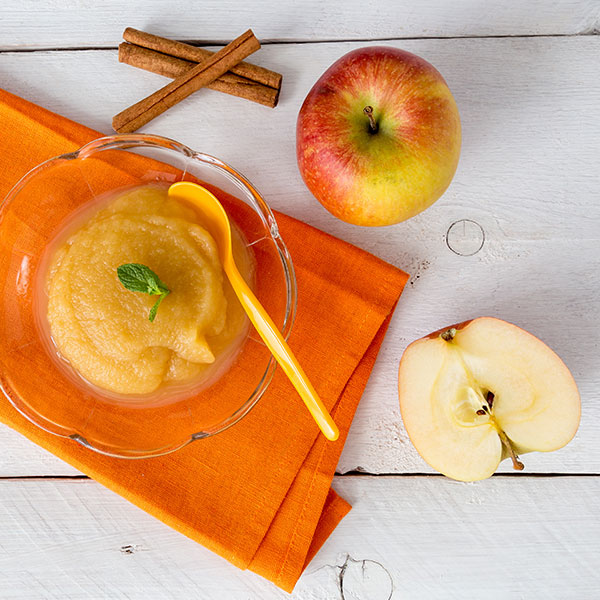
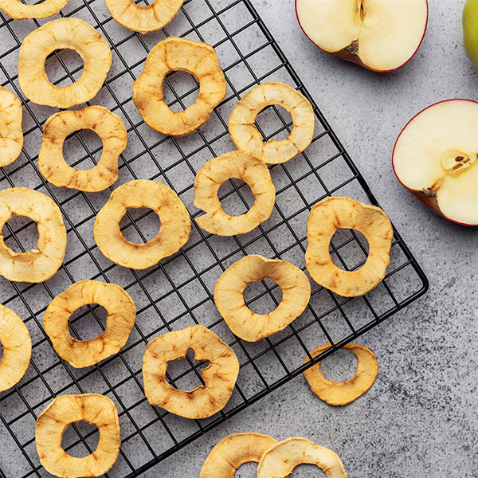

많이 찾는 제품
영양 성분
Apple Cinnamon Tea
사과의 은은한 달콤함과 시나몬의 따뜻한 향이 조화롭게 어우러진 차
| 성분명 | 함량 |
|---|---|
| 칼로리 (Calories) | 180kcal |
| 나트륨 (Sodium) | 110 mg |
| 탄수화물 (Carbohydrates) | 15 g |
| 지방 (Total Fat) | 9 g |
| 단백질 (Protein) | 9 g |
| 카페인 (Caffeine) | 75 ~ 150 mg |
리뷰
따뜻하게 감싸주는 한 잔

사과의 은은한 달콤함과 시나몬의 따뜻한 향이 부드럽게 어우러져 첫 모금부터 편안함이 느껴졌어요. 향이 과하지 않아 부담 없이 마시기 좋고, 입안에 은근하게 남는 여운도 인상적이에요. 차분한 분위기에서 천천히 즐기기 좋았고, 하루를 마무리할 때 특히 잘 어울리는 티입니다.
포근함과 상큼함의 균형

처음에는 시나몬의 포근한 향이 감싸듯 퍼지고, 이내 사과의 상큼함이 은은하게 올라와 균형이 좋아요. 두 가지 향이 자연스럽게 이어져서 끝까지 질리지 않고 편안하게 마실 수 있었어요. 특히 날씨가 쌀쌀할 때 더 매력적으로 느껴지고, 몸과 마음을 동시에 따뜻하게 해주는 느낌이에요.
가볍게 즐기는 여유로운 티
과하게 달지 않고 깔끔한 맛이 인상적이었어요. 자연스러운 사과 향 덕분에 산뜻하게 시작되고, 시나몬이 은은하게 마무리를 잡아줘서 좋았습니다. 무겁지 않아서 언제든 가볍게 즐기기 좋고, 혼자 조용히 시간을 보내고 싶을 때 잘 어울려요. 편안한 여유를 느끼게 해주는 티였습니다.